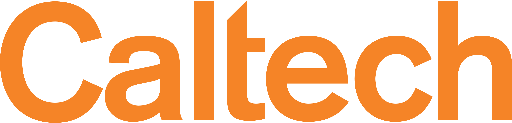
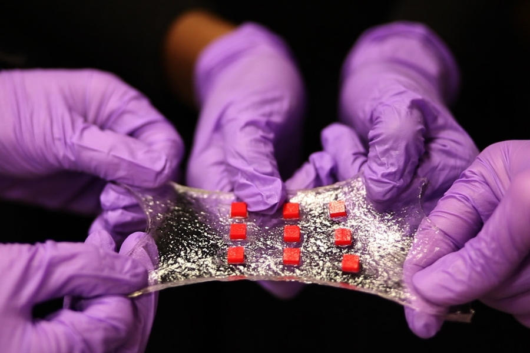

Amin Tavakoli
Postdoctoral Fellow
Department of Computing and Mathematical Sciences
California Institute of Technology

Email: amint@caltech.edu
[Publications] | [Research] | [Teaching] | [Contact]
About Me
Education
Research Interests
Ordered by the extent of my current involvement.
Publications
You can find my publications here: Google Scholar
Recent Projects

While deep learning has advanced quantum chemistry, most models remain limited to neutral, closed-shell molecules. In contrast, real-world systems involve varying charges, spins, and environments. We present our model—a geometry- and physics-informed deep learning framework that incorporates spin-polarized orbital features and SE(3)-equivariant graph neural networks to represent arbitrary molecular systems. Our model accurately predicts properties of charged, open-shell, and solvated molecules, and generalizes to much larger systems than seen during training. It reaches chemical accuracy with 10× less data than competing models and offers a 1,000–10,000× speedup over DFT, thanks to its physics-grounded design.

DeepRXN is a specialized platform designed to advance the integration of deep learning into chemoinformatics, hosting predictive chemoinformatics software and public chemical reaction databases. Its unique focus on representing chemical reactions through elementary step reactions offers numerous advantages, with applications spanning reaction prediction, synthetic planning, atmospheric chemistry, drug design, and beyond. This innovative perspective holds the potential to reshape and elevate various aspects of chemical research and applications within a singular framework.

We developed an AI-based reaction prediction system to uncover the mechanism behind a novel hydrogel with extraordinary stretchability—capable of extending up to 260 times its original length. The AI reveals a previously unknown network formation process in which polyethylene oxide (PEO) chains create scission-prone links between dimethylacrylamide-based polymer networks cross-linked by methylenebisacrylamide. These insights guide the hydrogel’s synthesis through targeted optimization of key components: APS, methylenebisacrylamide, dimethylacrylamide, and PEO. Experimental validation via FTIR spectroscopy confirms AI-predicted mechanisms, including PEO-carboxyl chain scission. We term the resulting structure a Span Network—an architecture central to the material’s extreme elasticity.


Teaching & Mentoring
Writings
Contact
Last updated: July 2025